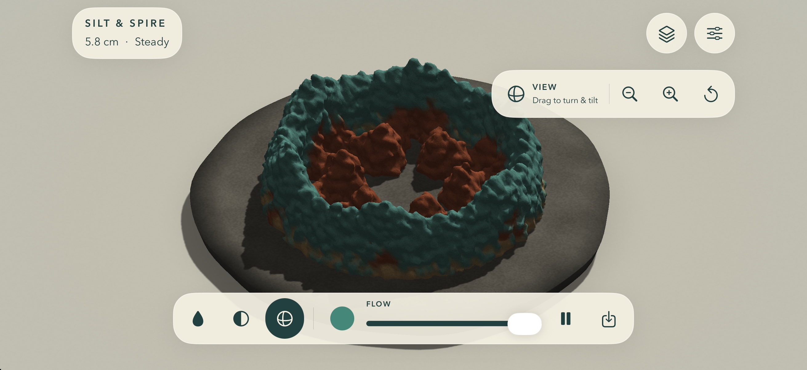

Choose a starting place
Shape on Cove, Spire, or Ledge, each with a different footprint and balance challenge.
A full-screen sand design studio for iPhone. Guide real pours, layer six colors, carve a channel, and turn each sculpture to see how it balances.
Build 4 is available to internal TestFlight testers. Version 1.0 has been submitted to Apple for App Review; the app is not publicly listed.
Choose Freehand, Ring, Spiral, Turrets, or Rosette to guide the stream. Every design is made grain by grain as the sand falls and settles.

Draw freehand or trace a guide to place a real stream of grains. Adjust the flow, change color, carve a channel, and turn the sculpture as your design takes shape.
Shape on Cove, Spire, or Ledge, each with a different footprint and balance challenge.
Choose from six sand colors, tune wetness and brush width, and build bands or mix colors along a ridge.
Use Carve to scoop a channel, Orbit to inspect another angle, and the balance indicator to follow your sculpture as it grows.
Watch the live balance indicator respond as grains land and the shape changes. A wide base may support more; a narrow neck or shifted load can topple. Turn the view to inspect the design from around the stone.
There is no timer or countdown. Local best heights and foundation goals give each attempt a mark to beat.
How the sand behavesEach foundation invites a different kind of patience.
A generous base for finding the rhythm of each drop.
Build tall and keep the growing weight centered.
A little room to begin, and a lot to balance.
Save a finished sculpture as a postcard on your iPhone. When you choose to export a PNG, the iOS share sheet lets you decide where it goes.
How saved work behavesBuild 4 is available to internal TestFlight testers. Version 1.0 has been submitted to Apple for App Review; the app is not publicly listed. We will add an App Store link after approval and verified public availability.
Visit help & FAQ